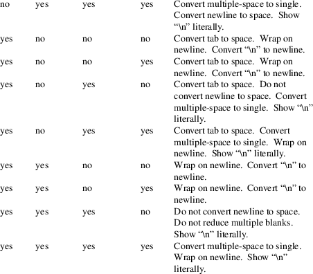
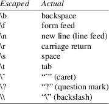
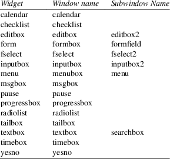
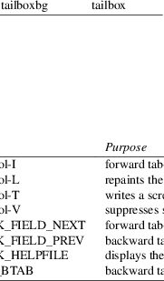
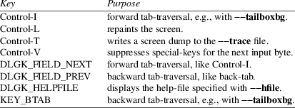
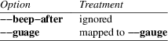
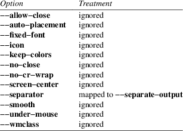
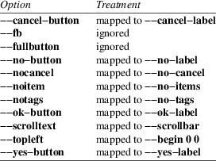

dialog − display dialog boxes from shell scripts
dialog
−−clear
dialog −−create−rc file
dialog −−print−maxsize
dialog common-options box-options
Dialog is a program that will let you present a variety of questions or display messages using dialog boxes from a shell script. These types of dialog boxes are implemented (though not all are necessarily compiled into dialog):
buildlist, calendar, checklist, dselect, editbox, form, fselect, gauge, infobox, inputbox, inputmenu, menu, mixedform, mixedgauge, msgbox (message), passwordbox, passwordform, pause, prgbox, programbox, progressbox, radiolist, rangebox, tailbox, tailboxbg, textbox, timebox, treeview, and yesno (yes/no).
You can put more than one dialog box into a script:
|
• |
Use the "−−and−widget" token to force dialog to proceed to the next dialog unless you have pressed ESC to cancel, or | ||
|
• |
Simply add the tokens for the next dialog box, making a chain. Dialog stops chaining when the return code from a dialog is nonzero, e.g., Cancel or No (see DIAGNOSTICS). |
Some widgets, e.g., checklist, will write text to dialog’s output. Normally that is the standard error, but there are options for changing this: “−−output−fd”, “−−stderr” and “−−stdout”. No text is written if the Cancel button (or ESC) is pressed; dialog exits immediately in that case.
All options begin with “−−” (two ASCII hyphens, for the benefit of those using systems with deranged locale support).
A “−−” by itself is used as an escape, i.e., the next token on the command-line is not treated as an option. This is different from getopt(1), which uses that token to treat the remaining tokens as parameters rather than options.
dialog
−−title −− −−Not an
option
dialog −−title This −−
−−title is not an option
Dialog uses no parameters, and uses its own options parser.
When a common (e.g., non-widget) option is repeated, the last found is the one that is used. Boolean options are handled specially so they can be cancelled, by adding (or omitting) a “no” modifier after the leading “−−”. For instance, −−no−shadow is documented here, but −−shadow also is accepted.
The “−−args” option tells dialog to list the command-line parameters to the standard error. This is useful when debugging complex scripts using the “−−” and “−−file”, since the command-line may be rewritten as these are expanded.
The “−−file” option tells dialog to read parameters from the file named as its value.
dialog −−file parameterfile
Blanks not within double-quotes are discarded (use backslashes to quote single characters). The result is inserted into the command-line, replacing “−−file” and its option value. Interpretation of the command-line resumes from that point. If parameterfile begins with “&”, dialog interprets the following text as a file descriptor number rather than a filename.
Most widgets accept height and width parameters, which can be used to automatically size the widget to accommodate multi-line message prompt values:
|
• |
If the parameter is negative, dialog uses the screen’s size. | ||
|
• |
If the parameter is zero, dialog uses minimum size for the widget to display the prompt and data. | ||
|
• |
Otherwise, dialog uses the given size for the widget. |
Common
Options
Most of the common options are reset before processing each
widget.
−−ascii−lines
Rather than draw graphics lines around boxes, draw ASCII “+” and “-” in the same place. See also “−−no−lines”.
−−aspect ratio
This gives you some control over the box dimensions when using auto sizing (specifying 0 for height and width). It represents width / height. The default is 9, which means 9 characters wide to every 1 line high.
−−backtitle backtitle
Specifies a backtitle string to be displayed on the backdrop, at the top of the screen.
−−begin y x
Specify the position of the upper left corner of a dialog box on the screen.
−−cancel−label string
Override the label used for “Cancel” buttons.
−−clear
Clears the widget screen, keeping only the screen_color background. Use this when you combine widgets with “−−and−widget” to erase the contents of a previous widget on the screen, so it won’t be seen under the contents of a following widget. Understand this as the complement of “−−keep−window”. To compare the effects, use these:
All three widgets visible, staircase effect, ordered 1,2,3:
dialog \
−−begin 2 2 −−yesno "" 0 0
\
−−and−widget −−begin 4 4
−−yesno "" 0 0 \
−−and−widget −−begin 6 6
−−yesno "" 0 0
Only the last widget is left visible:
dialog \
−−clear −−begin 2 2
−−yesno "" 0 0 \
−−and−widget −−clear
−−begin 4 4 −−yesno "" 0 0
\
−−and−widget −−begin 6 6
−−yesno "" 0 0
All three widgets visible, staircase effect, ordered 3,2,1:
dialog \
−−keep−window −−begin 2 2
−−yesno "" 0 0 \
−−and−widget
−−keep−window −−begin 4 4
−−yesno "" 0 0 \
−−and−widget −−begin 6 6
−−yesno "" 0 0
First and third widget visible, staircase effect, ordered 3,1:
dialog \
−−keep−window −−begin 2 2
−−yesno "" 0 0 \
−−and−widget −−clear
−−begin 4 4 −−yesno "" 0 0
\
−−and−widget −−begin 6 6
−−yesno "" 0 0
Note, if you want to restore original console colors and send your cursor home after the dialog program has exited, use the clear(1) command. Conversely, if you want to clear the screen and send your cursor to the lower left after the dialog program has exited, use the −−erase−on−exit option.
−−colors
Interpret embedded “\Z” sequences in the dialog text by the following character, which tells dialog to set colors or video attributes:
|
• |
0 through 7 are the ANSI color numbers used in curses: black, red, green, yellow, blue, magenta, cyan and white respectively. | ||
|
• |
Bold is set by ’b’, reset by ’B’. | ||
|
• |
Reverse is set by ’r’, reset by ’R’. | ||
|
• |
Underline is set by ’u’, reset by ’U’. | ||
|
• |
The settings are cumulative, e.g., “\Zb\Z1” makes the following text bold (perhaps bright) red. | ||
|
• |
Restore normal settings with “\Zn”. |
−−column−separator string
Tell dialog to split data for radio/checkboxes and menus on the occurrences of the given string, and to align the split data into columns.
−−cr−wrap
Interpret embedded newlines in the dialog text as a newline on the screen. Otherwise, dialog will only wrap lines where needed to fit inside the text box.
Even though you can control line breaks with this, Dialog will still wrap any lines that are too long for the width of the box. Without cr-wrap, the layout of your text may be formatted to look nice in the source code of your script without affecting the way it will look in the dialog.
The cr−wrap feature is implemented subject to these conditions:
|
• |
the string contains “\n” and the −−no−nl−expand option is not used, or | ||
|
• |
the −−trim option is used. |
For more information, see Whitespace Options.
−−create−rc file
When dialog supports run-time configuration, this can be used to dump a sample configuration file to the file specified by file.
−−cursor−off−label
Place the terminal cursor at the end of a button instead of on the first character of the button label. This is useful to reduce visual confusion when the cursor coloration interacts poorly with the button-label text colors.
−−date−format format
If the host provides strftime, this option allows you to specify the format of the date printed for the −−calendar widget. The time of day (hour, minute, second) are the current local time.
−−defaultno
Make the default value of the yes/no box a No. Likewise, treat the default button of widgets that provide “OK” and “Cancel” as a Cancel. If “−−no−cancel” or “−−visit−items” are given those options overrides this, making the default button always “Yes” (internally the same as “OK”).
−−default−button string
Set the default (preselected) button in a widget. By preselecting a button, a script makes it possible for the user to simply press Enter to proceed through a dialog with minimum interaction.
The option’s value is the name of the button: ok, yes, cancel, no, help or extra.
Normally the first button in each widget is the default. The first button shown is determined by the widget together with the “−−no−ok” and “−−no−cancel” options. If this option is not given, there is no default button assigned.
−−default−item string
Set the default item in a checklist, form or menu box. Normally the first item in the box is the default.
−−erase−on−exit
When dialog exits, remove the dialog widget, erasing the entire screen to its native background color, and place the terminal cursor at the lower left corner.
−−exit−label string
Override the label used for “EXIT” buttons.
−−extra−button
Show an extra button, between “OK” and “Cancel” buttons.
The extra button appears between “Yes” and “No” for the yesno widget.
−−extra−label string
Override the label used for “Extra” buttons. Note: for inputmenu widgets, this defaults to “Rename”.
|
−−help |
Prints the help message to the standard output and exits. The help message is also printed if no options are given, or if an unrecognized option is given. |
−−help−button
Show a help-button after “OK” and “Cancel” buttons in boxes which have a list of tagged items (i.e., checklist, radiolist, menu, and treeview boxes).
The help-button appears after “Yes” and “No” for the yesno widget.
On exit, the return status indicates that the Help button was pressed. Dialog also writes a message to its output after the token “HELP”:
|
• |
If "−−item−help" is also given, the item-help text is written. | ||
|
• |
Otherwise, the item’s tag (the first field) is written. |
You can use the −−help−tags option and/or set the DIALOG_ITEM_HELP environment variable to modify these messages and exit-status.
This option can be applied to other widgets, which have an “OK” button, whether or not the “Cancel” button is used. The return status and output are not treated specially for the other widgets; the help-button is just an extra button.
−−help−label string
Override the label used for “Help” buttons.
−−help−status
If the help-button is selected, writes the checklist, radiolist or form information after the item-help “HELP” information. This can be used to reconstruct the state of a checklist after processing the help request.
−−help−tags
Modify the messages written on exit for −−help−button by making them always just the item’s tag. This does not affect the exit status code.
−−hfile filename
Display the given file using a textbox when the user presses F1.
−−hline string
Display the given string centered at the bottom of the widget.
−−ignore
Ignore options that dialog does not recognize. Some well-known ones such as “−−icon” are ignored anyway, but this is a better choice for compatibility with other implementations.
−−input−fd fd
Read keyboard input from the given file descriptor. Most dialog scripts read from the standard input, but the gauge widget reads a pipe (which is always standard input). Some configurations do not work properly when dialog tries to reopen the terminal. Use this option (with appropriate juggling of file-descriptors) if your script must work in that type of environment.
−−insecure
Makes the password widget friendlier but less secure, by echoing asterisks for each character.
−−iso−week
Set the starting point for the week-number shown in the “−−calendar” option according to ISO-8601, which starts numbering with the first week which includes a Thursday in January.
−−item−help
Interpret the tags data for checklist, radiolist and menu boxes adding a column which is displayed in the bottom line of the screen, for the currently selected item.
−−keep−tite
When built with ncurses, dialog normally checks to see if it is running in an xterm, and in that case tries to suppress the initialization strings that would make it switch to the alternate screen. Switching between the normal and alternate screens is visually distracting in a script which runs dialog several times. Use this option to allow dialog to use those initialization strings.
−−keep−window
Normally when dialog performs several tailboxbg widgets connected by “−−and−widget”, it clears the old widget from the screen by painting over it. Use this option to suppress that repainting.
At exit, dialog repaints all of the widgets which have been marked with “−−keep−window”, even if they are not tailboxbg widgets. That causes them to be repainted in reverse order. See the discussion of the “−−clear” option for examples.
−−last−key
At exit, report the last key which the user entered. This is the curses key code rather than a symbol or literal character, and is only reported for keys which are bound to an action. It can be used by scripts to distinguish between two keys which are bound to the same action.
−−max−input size
Limit input strings to the given size. If not specified, the limit is 2048.
−−no−cancel
Suppress the “Cancel” button in checklist, inputbox and menu box modes. A script can still test if the user pressed the ESC key to cancel to quit.
−−no−collapse
Normally dialog converts tabs to spaces and reduces multiple spaces to a single space for text which is displayed in a message boxes, etc. Use this option to disable that feature. Note that dialog will still wrap text, subject to the “−−cr−wrap” and “−−trim” options.
The no−collapse feature is implemented subject to these conditions:
|
• |
the string contains “\n” and the −−no−nl−expand option is not used, or | ||
|
• |
the −−trim option is not used. |
For more information, see Whitespace Options.
−−no−hot−list
Tells dialog to suppress the hotkey feature for lists, e.g., the checkbox, menus.
Normally, the first uppercase character of a list entry will be highlighted, and typing that character will move the focus to that entry. This option suppresses both the highlighting and the movement.
Hotkeys for buttons (“OK” , “Cancel”, etc.) are unaffected.
−−no−items
Some widgets (checklist, inputmenu, radiolist, menu) display a list with two columns (a “tag” and “item”, i.e., “description”). This option tells dialog to read shorter rows, omitting the “item” part of the list. This is occasionally useful, e.g., if the tags provide enough information.
See also −−no−tags. If both options are given, this one is ignored.
−−no−kill
Tells dialog to put the tailboxbg box in the background, printing its process id to dialog’s output. SIGHUP is disabled for the background process.
−−no-label string
Override the label used for “No” buttons.
−−no−lines
Rather than draw lines around boxes, draw spaces in the same place. See also “−−ascii−lines”.
−−no−mouse
Do not enable the mouse.
−−no−nl−expand
Do not convert “\n” substrings of the message/prompt text into literal newlines.
The no−nl−expand feature is used only if the string contains “\n” so that there is something to convert.
For more information, see Whitespace Options.
−−no−ok
Suppress the “OK” button, so that it is not displayed. A script can still test if the user pressed the “Enter” key to accept the data:
|
• |
The “Enter” key is always handled as the “OK” button when the −−no−ok option is used. That is, by default it is bound to the LEAVE virtual key. |
When −−no−ok is not used, you can use the the Tab key to move the cursor through the fields and buttons on the widget. In that case, the “Enter” key activates the current button if the cursor is positioned on a button.
|
• |
To provide for the case where you want to activate a button when using −−no−ok, there is another virtual key LEAVE, which activates the current button. By default, ^D (EOF) is bound to that key. |
−−no−shadow
Suppress shadows that would be drawn to the right and bottom of each dialog box.
−−no−tags
Some widgets (checklist, inputmenu, radiolist, menu) display a list with two columns (a “tag” and “description”). The tag is useful for scripting, but may not help the user. The −−no−tags option (from Xdialog) may be used to suppress the column of tags from the display. Unlike the −−no−items option, this does not affect the data which is read from the script.
Xdialog does not display the tag column for the analogous buildlist and treeview widgets; dialog does the same.
Normally dialog allows you to quickly move to entries on the displayed list, by matching a single character to the first character of the tag. When the −−no−tags option is given, dialog matches against the first character of the description. In either case, the matchable character is highlighted.
−−ok−label string
Override the label used for “OK” buttons.
−−output−fd fd
Direct output to the given file descriptor. Most dialog scripts write to the standard error, but error messages may also be written there, depending on your script.
−−separator
string
−−output−separator string
Specify a string that will separate the output on dialog’s output from checklists, rather than a newline (for −−separate−output) or a space. This applies to other widgets such as forms and editboxes which normally use a newline.
−−print−maxsize
Print the maximum size of dialog boxes, i.e., the screen size, to dialog’s output. This may be used alone, without other options.
−−print−size
Prints the size of each dialog box to dialog’s output when the box is initialized.
−−print−text−only string [ height [ width ] ]
Prints the string as it would be wrapped in a message box to dialog’s output.
Because the optional height and width default to zero, if they are omitted, dialog autosizes according to the screen dimensions.
−−print−text−size string [ height [ width ] ]
Prints the size of the string as it would be wrapped in a message box, to dialog’s output, as
height width
Because the optional height and width parameters default to zero, if they are omitted, dialog autosizes according to the screen dimensions.
−−print−version
Prints dialog’s version to dialog’s output. This may be used alone, without other options. It does not cause dialog to exit by itself.
−−quoted
Normally dialog quotes the strings returned by checklist’s as well as the item-help text. Use this option to quote all string results as needed (i.e., if the string contains whitespace or a single or double-quote character).
−−reorder
By default, the buildlist widget uses the same order for the output (right) list as for the input (left). Use this option to tell dialog to use the order in which a user adds selections to the output list.
−−scrollbar
For widgets holding a scrollable set of data, draw a scrollbar on its right-margin. This does not respond to the mouse.
−−separate−output
For certain widgets (buildlist, checklist, treeview), output result one line at a time, with no quoting. This facilitates parsing by another program.
−−separate−widget string
Specify a string that will separate the output on dialog’s output from each widget. This is used to simplify parsing the result of a dialog with several widgets. If this option is not given, the default separator string is a tab character.
−−single−quoted
Use single-quoting as needed (and no quotes if unneeded) for the output of checklist’s as well as the item-help text.
If this option is not set, dialog may use double quotes around each item. In either case, dialog adds backslashes to make the output useful in shell scripts.
Single quotes would be needed if the string contains whitespace or a single or double-quote character.
−−size−err
Check the resulting size of a dialog box before trying to use it, printing the resulting size if it is larger than the screen. (This option is obsolete, since all new-window calls are checked).
−−sleep secs
Sleep (delay) for the given number of seconds after processing a dialog box.
−−stderr
Direct output to the standard error. This is the default, since curses normally writes screen updates to the standard output.
−−stdout
Direct output to the standard output. This option is provided for compatibility with Xdialog, however using it in portable scripts is not recommended, since curses normally writes its screen updates to the standard output. If you use this option, dialog attempts to reopen the terminal so it can write to the display. Depending on the platform and your environment, that may fail.
−−tab−correct
Convert each tab character to one or more spaces (for the textbox widget; otherwise to a single space). Otherwise, tabs are rendered according to the curses library’s interpretation. The −−no−collapse option disables tab expansion.
−−tab−len n
Specify the number of spaces that a tab character occupies if the “−−tab−correct” option is given. The default is 8. This option is only effective for the textbox widget.
−−time−format format
If the host provides strftime, this option allows you to specify the format of the time printed for the −−timebox widget. The day, month, year values in this case are for the current local time.
−−timeout secs
Timeout if no user response within the given number of seconds. A timeout of zero seconds is ignored.
Normally a timeout causes an ESC character to be entered in the current widget, cancelling it. Other widgets may still be on the screen; these are not cancelled. Set the DIALOG_TIMEOUT environment variable to tell dialog to directly exit instead, i.e., cancelling all widgets on the screen.
This option is ignored by the “−−pause” widget. It is also overridden if the background “−−tailboxbg” option is used to set up multiple concurrent widgets.
−−title title
Specifies a title string to be displayed at the top of the dialog box.
−−trace filename
logs the command-line parameters, keystrokes and other information to the given file. If dialog reads a configure file, it is logged as well. Piped input to the gauge widget is logged. Use control/T to log a picture of the current dialog window.
The dialog program handles some command-line parameters specially, and removes them from the parameter list as they are processed. For example, if the first option is −−trace, then that is processed (and removed) before dialog initializes the display.
−−week−start day
sets the starting day for the week, used in the “−−calendar” option. The day parameter can be
|
• |
a number (0 to 6, Sunday through Saturday using POSIX) or | ||
|
• |
the special value “locale” (this works with systems using glibc, providing an extension to the locale command, the first_weekday value). | ||
|
• |
a string matching one of the abbreviations for the day of the week shown in the calendar widget, e.g., “Mo” for “Monday”. | ||
|
−−trim |
eliminate leading blanks, trim literal newlines and repeated blanks from message text.
The trim feature is implemented subject to these conditions:
|
• |
the string does not contain “\n” or |
|||
|
• |
the −−no−nl−expand option is used. |
For more information, see Whitespace Options.
See also the “−−cr−wrap” and “−−no−collapse” options.
−−version
Prints dialog’s version to the standard output, and exits. See also “−−print−version”.
−−visit−items
Modify the tab-traversal of checklist, radiolist, menubox and inputmenu to include the list of items as one of the states. This is useful as a visual aid, i.e., the cursor position helps some users.
When this option is given, the cursor is initially placed on the list. Abbreviations (the first letter of the tag) apply to the list items. If you tab to the button row, abbreviations apply to the buttons.
−−yes-label string
Override the label used for “Yes” buttons.
Box
Options
All dialog boxes have at least three parameters:
|
text |
the caption or contents of the box. |
|||
|
height |
the height of the dialog box. |
|||
|
width |
the width of the dialog box. |
Other
parameters depend on the box type.
−−buildlist text height width
list-height [ tag item status ] ...
A buildlist dialog displays two lists, side-by-side. The list on the left shows unselected items. The list on the right shows selected items. As items are selected or unselected, they move between the lists.
Use a carriage return or the “OK” button to accept the current value in the selected-window and exit. The results are written using the order displayed in the selected-window.
The initial on/off state of each entry is specified by status.
The dialog behaves like a menu, using the −−visit−items to control whether the cursor is allowed to visit the lists directly.
|
• |
If −−visit−items is not given, tab-traversal uses two states (OK/Cancel). | ||
|
• |
If −−visit−items is given, tab-traversal uses four states (Left/Right/OK/Cancel). |
Whether or not −−visit−items is given, it is possible to move the highlight between the two lists using the default “^” (left-column) and “$” (right-column) keys.
On exit, a list of the tag strings of those entries that are turned on will be printed on dialog’s output.
If the "−−separate−output" option is not given, the strings will be quoted as needed to make it simple for scripts to separate them. By default, this uses double-quotes, as needed. See the “−−single−quoted” option, which modifies the quoting behavior.
−−calendar text height width day month year
A calendar box displays month, day and year in separately adjustable windows. If the values for day, month or year are missing or negative, the current date’s corresponding values are used. You can increment or decrement any of those using the left-, up-, right-, and down-arrows. Use vi-style h, j, k and l for moving around the array of days in a month. Use tab or backtab to move between windows. If the year is given as zero, the current date is used as an initial value.
On exit, the date is printed in the form day/month/year. The format can be overridden using the −−date−format option.
−−checklist text height width list-height [ tag item status ] ...
A checklist box is similar to a menu box; there are multiple entries presented in the form of a menu. Another difference is that you can indicate which entry is currently selected, by setting its status to on. Instead of choosing one entry among the entries, each entry can be turned on or off by the user. The initial on/off state of each entry is specified by status.
On exit, a list of the tag strings of those entries that are turned on will be printed on dialog’s output.
If the “−−separate−output” option is not given, the strings will be quoted as needed to make it simple for scripts to separate them. By default, this uses double-quotes (as needed). See the “−−single−quoted” option, which modifies the quoting behavior.
−−dselect filepath height width
The directory-selection dialog displays a text-entry window in which you can type a directory, and above that a windows with directory names.
Here filepath can be a filepath in which case the directory window will display the contents of the path and the text-entry window will contain the preselected directory.
Use tab or arrow keys to move between the windows. Within the directory window, use the up/down arrow keys to scroll the current selection. Use the space-bar to copy the current selection into the text-entry window.
Typing any printable characters switches focus to the text-entry window, entering that character as well as scrolling the directory window to the closest match.
Use a carriage return or the “OK” button to accept the current value in the text-entry window and exit.
On exit, the contents of the text-entry window are written to dialog’s output.
−−editbox filepath height width
The edit-box dialog displays a copy of the file. You may edit it using the backspace, delete and cursor keys to correct typing errors. It also recognizes pageup/pagedown. Unlike the −−inputbox, you must tab to the “OK” or “Cancel” buttons to close the dialog. Pressing the “Enter” key within the box will split the corresponding line.
On exit, the contents of the edit window are written to dialog’s output.
−−form text height width formheight [ label y x item y x flen ilen ] ...
The form dialog displays a form consisting of labels and fields, which are positioned on a scrollable window by coordinates given in the script. The field length flen and input-length ilen tell how long the field can be. The former defines the length shown for a selected field, while the latter defines the permissible length of the data entered in the field.
|
• |
If flen is zero, the corresponding field cannot be altered. and the contents of the field determine the displayed-length. | ||
|
• |
If flen is negative, the corresponding field cannot be altered, and the negated value of flen is used as the displayed-length. | ||
|
• |
If ilen is zero, it is set to flen. |
Use up/down arrows (or control/N, control/P) to move between fields. Use tab to move between windows.
On exit, the contents of the form-fields are written to dialog’s output, each field separated by a newline. The text used to fill non-editable fields (flen is zero or negative) is not written out.
−−fselect filepath height width
The fselect (file-selection) dialog displays a text-entry window in which you can type a filename (or directory), and above that two windows with directory names and filenames.
Here filepath can be a filepath in which case the file and directory windows will display the contents of the path and the text-entry window will contain the preselected filename.
Use tab or arrow keys to move between the windows. Within the directory or filename windows, use the up/down arrow keys to scroll the current selection. Use the space-bar to copy the current selection into the text-entry window.
Typing any printable characters switches focus to the text-entry window, entering that character as well as scrolling the directory and filename windows to the closest match.
Typing the space character forces dialog to complete the current name (up to the point where there may be a match against more than one entry).
Use a carriage return or the “OK” button to accept the current value in the text-entry window and exit.
On exit, the contents of the text-entry window are written to dialog’s output.
−−gauge text height width [percent]
A gauge box displays a meter along the bottom of the box. The meter indicates the percentage. New percentages are read from standard input, one integer per line. The meter is updated to reflect each new percentage. If the standard input reads the string “XXX”, then the first line following is taken as an integer percentage, then subsequent lines up to another “XXX” are used for a new prompt. The gauge exits when EOF is reached on the standard input.
The percent value denotes the initial percentage shown in the meter. If not specified, it is zero.
On exit, no text is written to dialog’s output. The widget accepts no input, so the exit status is always OK.
−−infobox text height width
An info box is basically a message box. However, in this case, dialog will exit immediately after displaying the message to the user. The screen is not cleared when dialog exits, so that the message will remain on the screen until the calling shell script clears it later. This is useful when you want to inform the user that some operations are carrying on that may require some time to finish.
On exit, no text is written to dialog’s output. An OK exit status is returned.
−−inputbox text height width [init]
An input box is useful when you want to ask questions that require the user to input a string as the answer. If init is supplied it is used to initialize the input string. When entering the string, the backspace, delete and cursor keys can be used to correct typing errors. If the input string is longer than can fit in the dialog box, the input field will be scrolled.
On exit, the input string will be printed on dialog’s output.
−−inputmenu text height width menu-height [ tag item ] ...
An inputmenu box is very similar to an ordinary menu box. There are only a few differences between them:
|
1. |
The entries are not automatically centered but left adjusted. | ||
|
2. |
An extra button (called Rename) is implied to rename the current item when it is pressed. | ||
|
3. |
It is possible to rename the current entry by pressing the Rename button. Then dialog will write the following on dialog’s output. |
RENAMED <tag> <item>
−−menu text height width menu-height [ tag item ] ...
As its name suggests, a menu box is a dialog box that can be used to present a list of choices in the form of a menu for the user to choose. Choices are displayed in the order given. Each menu entry consists of a tag string and an item string. The tag gives the entry a name to distinguish it from the other entries in the menu. The item is a short description of the option that the entry represents. The user can move between the menu entries by pressing the cursor keys, the first letter of the tag as a hot-key, or the number keys 1 through 9. There are menu-height entries displayed in the menu at one time, but the menu will be scrolled if there are more entries than that.
On exit the tag of the chosen menu entry will be printed on dialog’s output. If the “−−help−button” option is given, the corresponding help text will be printed if the user selects the help button.
−−mixedform text height width formheight [ label y x item y x flen ilen itype ] ...
The mixedform dialog displays a form consisting of labels and fields, much like the −−form dialog. It differs by adding a field-type parameter to each field’s description. Each bit in the type denotes an attribute of the field:
|
1 |
hidden, e.g., a password field. |
|||
|
2 |
readonly, e.g., a label. |
−−mixedgauge text height width percent [ tag1 item1 ] ...
A mixedgauge box displays a meter along the bottom of the box. The meter indicates the percentage.
It also displays a list of the tag- and item-values at the top of the box. See dialog(3) for the tag values.
The text is shown as a caption between the list and meter. The percent value denotes the initial percentage shown in the meter.
No provision is made for reading data from the standard input as −−gauge does.
On exit, no text is written to dialog’s output. The widget accepts no input, so the exit status is always OK.
−−msgbox text height width
A message box is very similar to a yes/no box. The only difference between a message box and a yes/no box is that a message box has only a single OK button. You can use this dialog box to display any message you like. After reading the message, the user can press the ENTER key so that dialog will exit and the calling shell script can continue its operation.
If the message is too large for the space, dialog may allow you to scroll it, provided that the underlying curses implementation is capable enough. In this case, a percentage is shown in the base of the widget.
On exit, no text is written to dialog’s output. Only an “OK” button is provided for input, but an ESC exit status may be returned.
−−pause text height width seconds
A pause box displays a meter along the bottom of the box. The meter indicates how many seconds remain until the end of the pause. The pause exits when timeout is reached or the user presses the OK button (status OK) or the user presses the CANCEL button or Esc key.
−−passwordbox text height width [init]
A password box is similar to an input box, except that the text the user enters is not displayed. This is useful when prompting for passwords or other sensitive information. Be aware that if anything is passed in “init”, it will be visible in the system’s process table to casual snoopers. Also, it is very confusing to the user to provide them with a default password they cannot see. For these reasons, using “init” is highly discouraged. See “−−insecure” if you do not care about your password.
On exit, the input string will be printed on dialog’s output.
−−passwordform text height width formheight [ label y x item y x flen ilen ] ...
This is identical to −−form except that all text fields are treated as password widgets rather than inputbox widgets.
−−prgbox
text command height width
−−prgbox command height width
A prgbox is very similar to a programbox.
This dialog box is used to display the output of a command that is specified as an argument to prgbox.
After the command completes, the user can press the ENTER key so that dialog will exit and the calling shell script can continue its operation.
If four parameters are given, it displays the text under the title, delineated from the scrolling file’s contents. If only three parameters are given, this text is omitted.
−−programbox
text height width
−−programbox height width
A programbox is very similar to a progressbox. The only difference between a program box and a progress box is that a program box displays an OK button (but only after the command completes).
This dialog box is used to display the piped output of a command. After the command completes, the user can press the ENTER key so that dialog will exit and the calling shell script can continue its operation.
If three parameters are given, it displays the text under the title, delineated from the scrolling file’s contents. If only two parameters are given, this text is omitted.
−−progressbox
text height width
−−progressbox height width
A progressbox is similar
to an tailbox, except that
a) rather than displaying the contents of a file,
it displays the piped output of a command and
b) it will exit when it reaches the end of the file
(there is no “OK” button).
If three parameters are given, it displays the text under the title, delineated from the scrolling file’s contents. If only two parameters are given, this text is omitted.
−−radiolist text height width list-height [ tag item status ] ...
A radiolist box is similar to a menu box. The only difference is that you can indicate which entry is currently selected, by setting its status to on.
On exit, the tag of the selected item is written to dialog’s output.
−−rangebox text height width min-value max-value default-value
Allow the user to select from a
range of values, e.g., using a slider. The dialog shows the
current value as a bar (like the gauge dialog). Tabs or
arrow keys move the cursor between the buttons and the
value. When the cursor is on the value, you can edit it by:
left/right cursor movement to select a digit to modify
|
+/- |
characters to increment/decrement the digit by one |
0 through 9
to set the digit to the given value
Some keys are
also recognized in all cursor positions:
home/end
set the value to its maximum or minimum
pageup/pagedown
increment the value so that the slider moves by one column
−−tailbox file height width
Display text from a file in a dialog box, as in a “tail -f” command. Scroll left/right using vi-style ’h’ and ’l’, or arrow-keys. A ’0’ resets the scrolling.
On exit, no text is written to dialog’s output. Only an “OK” button is provided for input, but an ESC exit status may be returned.
−−tailboxbg file height width
Display text from a file in a dialog box as a background task, as in a “tail -f &” command. Scroll left/right using vi-style ’h’ and ’l’, or arrow-keys. A ’0’ resets the scrolling.
Dialog treats the background task specially if there are other widgets (−−and−widget) on the screen concurrently. Until those widgets are closed (e.g., an “OK”), dialog will perform all of the tailboxbg widgets in the same process, polling for updates. You may use a tab to traverse between the widgets on the screen, and close them individually, e.g., by pressing ENTER. Once the non-tailboxbg widgets are closed, dialog forks a copy of itself into the background, and prints its process id if the “−−no−kill” option is given.
On exit, no text is written to dialog’s output. Only an “EXIT” button is provided for input, but an ESC exit status may be returned.
NOTE: Older versions of dialog forked immediately and attempted to update the screen individually. Besides being bad for performance, it was unworkable. Some older scripts may not work properly with the polled scheme.
−−textbox file height width
A text box lets you display the contents of a text file in a dialog box. It is like a simple text file viewer. The user can move through the file by using the cursor, page-up, page-down and HOME/END keys available on most keyboards. If the lines are too long to be displayed in the box, the LEFT/RIGHT keys can be used to scroll the text region horizontally. You may also use vi-style keys h, j, k, and l in place of the cursor keys, and B or N in place of the page-up and page-down keys. Scroll up/down using vi-style ’k’ and ’j’, or arrow-keys. Scroll left/right using vi-style ’h’ and ’l’, or arrow-keys. A ’0’ resets the left/right scrolling. For more convenience, vi-style forward and backward searching functions are also provided.
On exit, no text is written to dialog’s output. Only an “EXIT” button is provided for input, but an ESC exit status may be returned.
−−timebox text height [width hour minute second]
A dialog is displayed which allows you to select hour, minute and second. If the values for hour, minute or second are missing or negative, the current date’s corresponding values are used. You can increment or decrement any of those using the left-, up-, right- and down-arrows. Use tab or backtab to move between windows.
On exit, the result is printed in the form hour:minute:second. The format can be overridden using the −−time−format option.
−−treeview text height width list-height [ tag item status depth ] ...
Display data organized as a tree. Each group of data contains a tag, the text to display for the item, its status (“on” or “off”) and the depth of the item in the tree.
Only one item can be selected (like the radiolist). The tag is not displayed.
On exit, the tag of the selected item is written to dialog’s output.
−−yesno text height width
A yes/no dialog box of size height rows by width columns will be displayed. The string specified by text is displayed inside the dialog box. If this string is too long to fit in one line, it will be automatically divided into multiple lines at appropriate places. The text string can also contain the sub-string "\n" or newline characters ‘\n’ to control line breaking explicitly. This dialog box is useful for asking questions that require the user to answer either yes or no. The dialog box has a Yes button and a No button, in which the user can switch between by pressing the TAB key.
On exit, no text is written to dialog’s output. In addition to the “Yes” and “No” exit codes (see DIAGNOSTICS) an ESC exit status may be returned.
The codes used for “Yes” and “No” match those used for “OK” and “Cancel”, internally no distinction is made.
Obsolete Options
|
−−beep |
This was used to tell the original cdialog that it should make a beep when the separate processes of the tailboxbg widget would repaint the screen. |
−−beep−after
Beep after a user has completed a widget by pressing one of the buttons.
Whitespace
Options
These options can be used to transform whitespace (space,
tab, newline) as dialog reads the script:
−−cr−wrap, −−no−collapse, −−no−nl−expand, and −−trim
The options are not independent:
|
• |
Dialog checks if the script contains at least one “\n” and (unless −−no−nl−expand is set) will ignore the −−no−collapse and −−trim options. | ||
|
• |
After checking for “\n” and the −−no−nl−expand option, dialog handles the −−trim option. |
If the −−trim option takes effect, then dialog ignores −−no−collapse. It changes sequences of tabs, spaces (and newlines unless −cr−wrap is set) to a single space.
|
• |
If neither the “\n” or −−trim cases apply, dialog checks −−no−collapse to decide whether to reduce sequences of tabs and spaces to a single space. |
In this case, dialog ignores −−cr−wrap and does not modify newlines.
Taking those dependencies into account, here is a table summarizing the behavior for the various combinations of options. The table assumes that the script contains at least one “\n” when the −−no−nl−expand option is not set.

|
1. |
Create a sample configuration file by typing: |
dialog −−create−rc file
|
2. |
At start, dialog determines the settings to use as follows: |
a)
|
if environment variable DIALOGRC is set, its value determines the name of the configuration file. | |||
|
b) |
if the file in (a) is not found, use the file $HOME/.dialogrc as the configuration file. | ||
|
c) |
if the file in (b) is not found, try using the GLOBALRC file determined at compile-time, i.e., /etc/dialogrc. | ||
|
d) |
if the file in (c) is not found, use compiled in defaults. | ||
|
3. |
Edit the sample configuration file and copy it to some place that dialog can find, as stated in step 2 above.
You can override or add to key bindings in dialog by adding to the configuration file. Dialog’s bindkey command maps single keys to its internal coding.
bindkey widget curses_key dialog_key
The widget name can be “*” (all widgets), or specific widgets such as textbox. Specific widget bindings override the “*” bindings. User-defined bindings override the built-in bindings.
The curses_key can be expressed in different forms:
|
• |
It may be any of the names derived from curses.h, e.g., “HELP” from “KEY_HELP”. | ||
|
• |
Dialog also recognizes ANSI control characters such as “^A”, “^?”, as well as C1-controls such as “~A” and “~?”. | ||
|
• |
Finally, dialog allows backslash escapes as in C. Those can be octal character values such as “\033” (the ASCII escape character), or the characters listed in this table: |

Dialog’s internal keycode names correspond to the DLG_KEYS_ENUM type in dlg_keys.h, e.g., “HELP” from “DLGK_HELP”.
Widget
Names
Some widgets (such as the formbox) have an area where fields
can be edited. Those are managed in a subwindow of the
widget, and may have separate keybindings from the main
widget because the subwindows are registered using a
different name.

Some widgets are actually other widgets, using internal settings to modify the behavior. Those use the same widget name as the actual widget:

Built-in
Bindings
This manual page does not list the key bindings for each
widget, because that detailed information can be obtained by
running dialog. If you have set the
−−trace option, dialog writes the
key-binding information for each widget as it is
registered.
A few bindings are built-in, independent of particular widgets:

Example
Normally dialog uses different keys for navigating
between the buttons and editing part of a dialog versus
navigating within the editing part. That is, tab (and
back-tab) traverse buttons (or between buttons and the
editing part), while arrow keys traverse fields within the
editing part. Tabs are also recognized as a special case for
traversing between widgets, e.g., when using multiple
tailboxbg widgets.
Some users may wish to use the same key for traversing within the editing part as for traversing between buttons. The form widget is written to support this sort of redefinition of the keys, by adding a special group in dlgk_keys.h for “form” (left/right/next/prev). Here is an example binding demonstrating how to do this:
bindkey
formfield TAB form_NEXT
bindkey formbox TAB form_NEXT
bindkey formfield BTAB form_prev
bindkey formbox BTAB form_prev
That type of redefinition would not be useful in other widgets, e.g., calendar, due to the potentially large number of fields to traverse.
|
DIALOGOPTS |
Define this variable to apply any of the common options to each widget. Most of the common options are reset before processing each widget. If you set the options in this environment variable, they are applied to dialog’s state after the reset. As in the “−−file” option, double-quotes and backslashes are interpreted. |
The “−−file” option is not considered a common option (so you cannot embed it within this environment variable).
|
DIALOGRC |
Define this variable if you want to specify the name of the configuration file to use. | ||
|
DIALOG_CANCEL |
|||
|
DIALOG_ERROR |
|||
|
DIALOG_ESC |
|||
|
DIALOG_EXTRA |
|||
|
DIALOG_HELP |
DIALOG_ITEM_HELP
|
DIALOG_TIMEOUT |
|||
|
DIALOG_OK |
Define any of these variables to change the exit code on |
•
|
Cancel (1), |
||||
|
• |
error (−1), |
|||
|
• |
ESC (255), |
|||
|
• |
Extra (3), |
|||
|
• |
Help (2), |
|||
|
• |
Help with −−item−help (2), |
|||
|
• |
Timeout (5), or |
|||
|
• |
OK (0). |
Normally shell scripts cannot distinguish between −1 and 255.
|
DIALOG_TTY |
Set this variable to “1” to provide compatibility with older versions of dialog which assumed that if the script redirects the standard output, that the “−−stdout” option was given. |
|
$HOME/.dialogrc |
default configuration file |
The dialog sources contain several samples of how to use the different box options and how they look. Just take a look into the directory samples/ of the source.
Exit status is subject to being overridden by environment variables. The default values and corresponding environment variables that can override them are:
|
0 |
if the YES or OK button is pressed (DIALOG_OK). | ||
|
1 |
if the No or Cancel button is pressed (DIALOG_CANCEL). | ||
|
2 |
if the Help button is pressed (DIALOG_HELP), |
except as noted below about DIALOG_ITEM_HELP.
|
3 |
if the Extra button is pressed (DIALOG_EXTRA). |
|||
|
4 |
if the Help button is pressed, |
and the
−−item−help option is set
and the DIALOG_ITEM_HELP environment variable is set to
4.
While any of the exit-codes can be overridden using environment variables, this special case was introduced in 2004 to simplify compatibility. Dialog uses DIALOG_ITEM_HELP (4) internally, but unless the environment variable is also set, it changes that to DIALOG_HELP (2) on exit.
|
5 |
if a timeout expires and the DIALOG_TIMEOUT variable is set to 5. | ||
|
−1 |
if errors occur inside dialog (DIALOG_ERROR) or dialog exits because the ESC key (DIALOG_ESC) was pressed. |
Dialog works with X/Open curses. However, some implementations have deficiencies:
|
• |
HPUX curses (and perhaps others) do not open the terminal properly for the newterm function. This interferes with dialog’s −−input−fd option, by preventing cursor-keys and similar escape sequences from being recognized. | ||
|
• |
NetBSD 5.1 curses has incomplete support for wide-characters. dialog will build, but not all examples display properly. |
You may want to write scripts which run with other dialog “clones”.
Original
Dialog
First, there is the “original” dialog
program to consider (versions 0.3 to 0.9). It had some
misspelled (or inconsistent) options. The dialog
program maps those deprecated options to the preferred ones.
They include:

Xdialog
This is an X application, rather than a terminal program.
With some care, it is possible to write useful scripts that
work with both Xdialog and dialog.
The dialog program ignores these options which are recognized by Xdialog:

Xdialog’s manpage has a section discussing its compatibility with dialog. There are some differences not shown in the manpage. For example, the html documentation states
Note: former Xdialog releases used the “\n” (line feed) as a results separator for the checklist widget; this has been changed to “/” in Xdialog v1.5.0 to make it compatible with (c)dialog. In your old scripts using the Xdialog checklist, you will then have to add the −−separate−output option before the −−checklist one.
Dialog has not used a different separator; the difference was likely due to confusion regarding some script.
Whiptail
Then there is whiptail. For practical purposes, it is
maintained by Debian (very little work is done by its
upstream developers). Its documentation (README.whiptail)
claims
whiptail(1)
is a lightweight replacement for dialog(1),
to provide dialog boxes for shell scripts.
It is built on the
newt windowing library rather than the ncurses library,
allowing
it to be smaller in embedded environments such as
installers,
rescue disks, etc.
whiptail is
designed to be drop-in compatible with dialog, but
has less features: some dialog boxes are not implemented,
such
as tailbox, timebox, calendarbox, etc.
Comparing actual sizes (Debian testing, 2007/1/10): The total of sizes for whiptail, the newt, popt and slang libraries is 757 KB. The comparable number for dialog (counting ncurses) is 520 KB. Disregard the first paragraph.
The second paragraph is misleading, since whiptail also does not work for common options of dialog, such as the gauge box. whiptail is less compatible with dialog than the original mid-1990s dialog 0.4 program.
whiptail’s manpage borrows features from dialog, e.g., but oddly cites only dialog versions up to 0.4 (1994) as a source. That is, its manpage refers to features which were borrowed from more recent versions of dialog, e.g.,
|
• |
−−gauge (from 0.5) |
|||
|
• |
−−passwordbox (from Debian changes in 1999), |
|||
|
• |
−−default−item (from dialog 2000/02/22), |
|||
|
• |
−−output−fd (from dialog 2002/08/14). |
Debian uses whiptail for the official dialog variation.
The dialog program ignores or maps these options which are recognized by whiptail:

There are visual differences which are not addressed by command-line options:
|
• |
dialog centers lists within the window. whiptail typically puts lists against the left margin. | ||
|
• |
whiptail uses angle brackets (“<” and “>”) for marking buttons. dialog uses square brackets. | ||
|
• |
whiptail marks the limits of subtitles with vertical bars. dialog does not mark the limits. | ||
|
• |
whiptail attempts to mark the top/bottom cells of a scrollbar with up/down arrows. When it cannot do this, it fills those cells with the background color of the scrollbar and confusing the user. dialog uses the entire scrollbar space, thereby getting better resolution. |
Perhaps.
Thomas E. Dickey (updates for 0.9b and beyond)
Kiran Cherupally – the mixed form and mixed gauge widgets.
Tobias C. Rittweiler
Valery Reznic – the form and progressbox widgets.
Yura Kalinichenko adapted the gauge widget as “pause”.
This is a rewrite (except as needed to provide compatibility) of the earlier version of dialog 0.9a, which lists as authors:
|
• |
Savio Lam – version 0.3, “dialog” |
|||
|
• |
Stuart Herbert – patch for version 0.4 |
|||
|
• |
Marc Ewing – the gauge widget. |
|||
|
• |
Pasquale De Marco “Pako” – version 0.9a, “cdialog” |